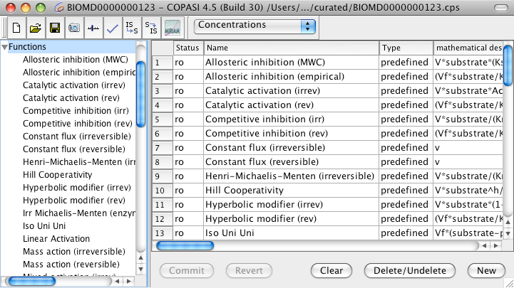
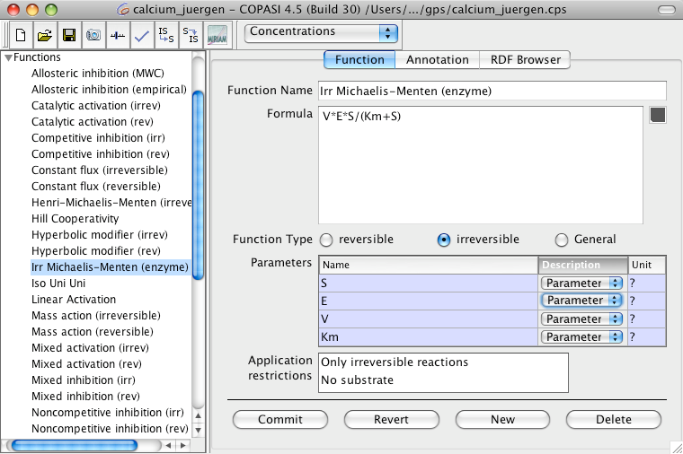
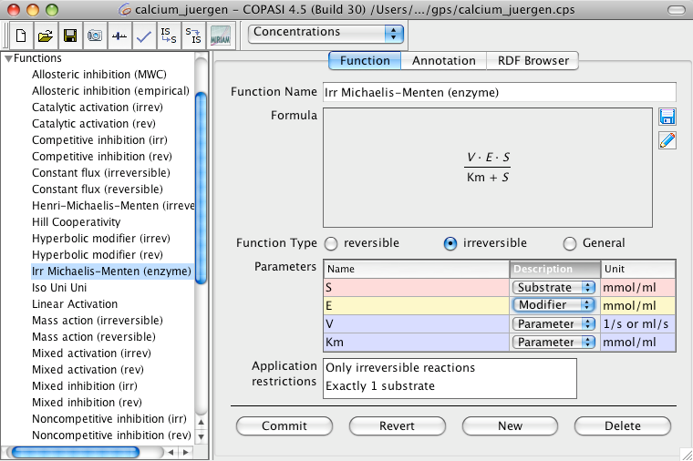

COPASI already defines a large set of commonly used kinetic functions to choose from. The list of defined functions is located at the last branch in the object tree.
|  |
| Function Table with predefined Functions |
Nevertheless sometimes you need to define your own kinetic function to solve a specific problem. COPASI enables you to add a new function either by double clicking on an empty table row or by clicking on the New button on the bottom of the screen. In the function definition dialog, you give your function a name in the Function Name field. This name has to be unique within the list of defined functions. Next, you have to specify a formula that defines the reaction rate of your kinetic function in the Formula field. The function string only covers the right side of the rate function.
|  |
| Function Definition Dialog |
So for Michaelis-Menten which is defined as v=V*(S/(Km+S)) you would enter v=V*(S/(Km+S)) into the Formula field. While you are typing the formula, COPASI already tries to parse the equation and extract the parameters. All parameters that COPASI finds are listed in the Parameters table.
|  |
| Function Definition Dialog with graphical Display of the Function |
In COPASI parameters can have arbitrary names, there are only a few rules that one has to be aware of. If a parameter starts with a letter or underscore character and contains only letters, digits and underscore characters all is well, if however the parameter name contains other characters, the whole parameter name has to be enclosed in double quotes. If the parameter name contains double quotes or backslashes those have to be escaped by a backslash.
As all variables found are defined, per default, as
Parameters , you should specify their correct types by selecting one from the drop down list Description.
However, the specific type of variables will affect to the type of reactions the function can be used for. E.g, if you define the function to contain two substrates and a modifier, you can later only use it for reactions that really do have two substrates.
Warning: The restrictions on the number of modifiers is not strict since substrates and reactants could act as modifiers. So the above mentioned rate law could be used on reactions that do not explicitly specify a modifier.
You can also see this in the Application restrictions table below the Parameters table. Let's say you define the function A*B and define
A and
B to be substrates, you will see that the Application restrictions say that there must be exactly two substrates in the reaction for that kinetics to be applicable. After defining this function, you will be able to use it for all chemical reaction that have exactly two substrates. Last but not least, you have to define whether this function can be applied to reversible, irreversible or both reaction types by selecting the reversible, irreversible or General radio button respectively. You can also call other functions from function definitions. There are four things you have to watch out for when you call a function within another function.
- Recursive function calls are not permitted. That is a function may not call itself, neither directly nor by calling another function that might call the first function again further along the line.
- You have to specify the correct number of arguments to the function called.
- You have to specify the correct argument types to the function call. I.e. if you call "Henry-Michaelis-Menten (irreversible)" from within another function, you have to make sure that the first call argument has a usage of Substrate and the other two have the usage Parameter.
- Which brings me to the last point. The built in function names in COPASI often use characters like "-" or even spaces, so if you want to call one of those functions, you have to quote this function name. So calling "Henry-Michaelis-Menten (irreversible)" from another function would look like this:
"Henry-Michaelis-Menten (irreversible)"(S, Km, V)
After you commit the function, you can use it for the definition of reactions.
The operators and functions that COPASI knows and therefore can be used to create user defined functions are the following:
Standard Operators
Standard Operators| Operator/Function | Description |
| + | plus operator |
| - | minus operator |
| / | division operator |
| * | multiplication operator |
| % | modulus operator |
| ^ | power operator |
Miscellaneaous Functions
Miscellaneaous Functions| Operator/Function | Description |
| abs / ABS | absolute value |
| floor / FLOOR | floor value |
| ceil / CEIL | next highest integer |
| factorial / FACTORIAL | factorial function |
| log / LOG | natural logarithm |
| log10 / LOG10 | logarithm for base 10 |
| exp / EXP | exponent function |
Trigonometric Functions
Trigonometric Functions| Operator/Function | Description |
| sin / SIN | sine function |
| cos / COS | cosine function |
| tan / TAN | tangent function |
| sec / SEC | secand function |
| csc / CSC | cosecand function |
| cot / COT | cotangent function |
| sinh / SINH | hyperbolic sine function |
| cosh / COSH | hyperbolic cosine function |
| tanh / TANH | hyperbolic tangent function |
| sech / SECH | hyperbolic secand function |
| csch / CSCH | hyperbolic cosecand function |
| coth / COTH | hyperbolic cotangent function |
| asin / ASIN | arcsine function |
| acos / ACOS | arccosine function |
| atan / ATAN | arctangent function |
| arcsec / ARCSEC | arcsecand function |
| arccsc / ARCCSC | arccosecand function |
| arccot / ARCCOT | arccotangent function |
| arcsinh / ARCSINH | hyperbolic arcsine function |
| arccosh / ARCCOSH | hyperbolic arccosine function |
| arctanh / ARCTANH | hyperbolic arctangent function |
| arcsech / ARCSECH | hyperbolic arcsecand function |
| arccsch / ARCCSCH | hyperbolic arccosecand function |
| arccoth / ARCCOTH | hyperbolic arccotangent function |
Random Distribuitions
Random Distributions| Operator/Function | Description |
| uniform/UNIFORM | This functions takes 2 arguments min and max. It returns a normally distributed value in the open interval (min, max). |
| normal/NORMAL | This function takes 2 arguments mean and standard deviation. It returns a uniform distributed value with the given mean ad standard deviation. |
Logical Operators
The logical operators and comparisons are evaluated in the order they are listed in the table.
Logical Operators| Operator/Function | Description |
| le / LE / <= | smaller or equal (≤) |
| lt / LT / < | smaller (<) |
| ge / GE / >= | greater or equal (≥) |
| gt / GT / > | greater (>) |
| ne / NE / != | not equal (!=) |
| eq / EQ / == | equal (=) |
| and / AND / && | logical and (&) |
| or / OR / || | logical or (|) |
| xor / XOR | logical xor |
| not / NOT / ! | logical negation |
Conditional Statement
In addition to defining "normal" functions, COPASI allows the definition of piecewise defined functions. Piecewise defined functions are constructed with the IF statement.
Conditional Statements| Operator/Function | Description |
| if() / IF() | if statement for the construction of piecewise defined functions etc. |
The functions name can be written with either all lowercase letters or all letters uppercase. Mixing of upper and lowercase letters is not allowed and will lead to errors. This function takes 3 arguments separated by a comma:
- Boolean expression
- Expression evaluated if the first argument evaluates to true.
- Expression evaluated if the first argument evaluates to false.
So in order to make this a little more clear, we will look at how one would implement the Heaviside step function in COPASI:
if(x lt 0.0, 0.0, if(x gt 0.0, 1.0, 0.5))
Warning: Although COPASI allows the usage of discontinuous functions (ceil, floor, factorial, etc) all integration is done by LSODA which officially can not handle discontinuous functions. Nevertheless in most cases this will lead to correct results, however you should be aware of the fact that the usage of discontinuous functions in COPASI can lead to errors. Later versions of COPASI will use different integration methods that will be able to deal with discontinuous functions.
Parenthesis
Parenthesis| Operator/Function | Description |
| () | parenthesis for grouping of elements |
Built-in Constants
In addition to the function and operators above, COPASI knows some predefined constant names:
Built-in Constants| Operator/Function | Description |
| pi / PI | Quotient of a circles circumference and its diameter ( 3.14159...) |
| exponentiale / EXPONENTIALE | Euler's number ( 2.7183... ) |
| true / TRUE | Boolean true value for conditional expressions |
| false / FALSE | Boolean false value for conditional expressions |
| infinity / INFINITY | Positive infinity |
Again, built-in constant names can be written with either all lowercase letters or all letters uppercase. Mixing of upper and lowercase letters is not allowed and will lead to errors.